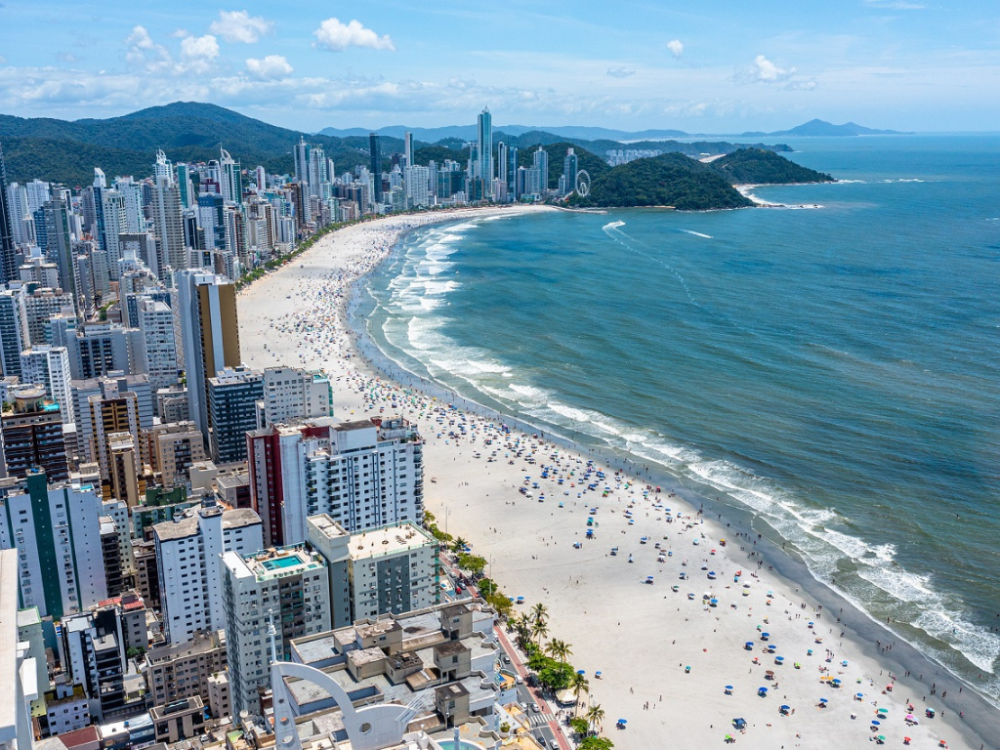

Visão geral criada por IA Santa Catarina, localizado na região Sul do Brasil, é um estado reconhecido pela alta qualidade de vida, segurança e economia diversificada, com destaque para a indústria, tecnologia e agronegócio. Com capital em Florianópolis e cerca de 295 municípios, o estado combina paisagens diversificadas, como praias paradisíacas no litoral e serras com ocorrência de neve no inverno. A cultura catarinense é fortemente marcada pela imigração europeia, visível na arquitetura, festas típicas como a Oktoberfest e na forte tradição enxaimel no Vale do Itajaí.
